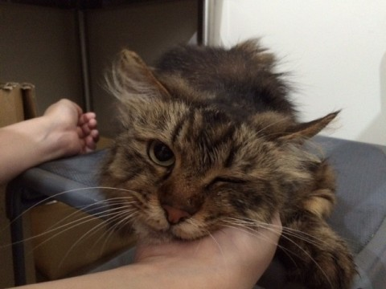

署名に参加してみませんか？
 【犬猫殺処分廃止100万人の世界大署名プロジェクト】
皆さんは犬や猫やどのように殺されているか
ご存知でしょうか？
多くの保健所で行われている「殺処分」とは、
CO2（二酸化炭素）での窒息死です。
この方法は安楽死とは言いがたい残酷なもので、
殺処分を受ける犬・猫たちは
複数頭が一度に狭い部屋に閉じ込められ、
窒息の苦しみと恐怖感を味わうことになります。
飼い主のもとで幸福に一生を終えることができたはずの
尊い命達が
悲惨な方法でその生涯を終えているのです。
もし、少しでも、
このような現状を変えたいと感じた方は
以下に署名をお願いします。
ここをクリック
【 請願内容 】
①即刻殺処分廃止
②繁殖産業廃止
③生体販売禁止（優良ブリーダー除く）
④TNRの徹底化
⑤権限のあるアニマルポリス設立
⑥環境の整ったシェルター用意
※殺処分は、ペットを飼うことと切っても切り離せない負の側面です。
殺処分数を減らすためには、まず無計画にペットを増やさないこと。
かわいいからといって命ある生き物を衝動買いしないこと。
ペットを家に迎え入れた際には避妊手術や去勢手術を行って、
飼いきれない数のペットを生み出さないことも、
愛犬家・愛猫家の重要な義務であることを肝に銘じておきましょう。